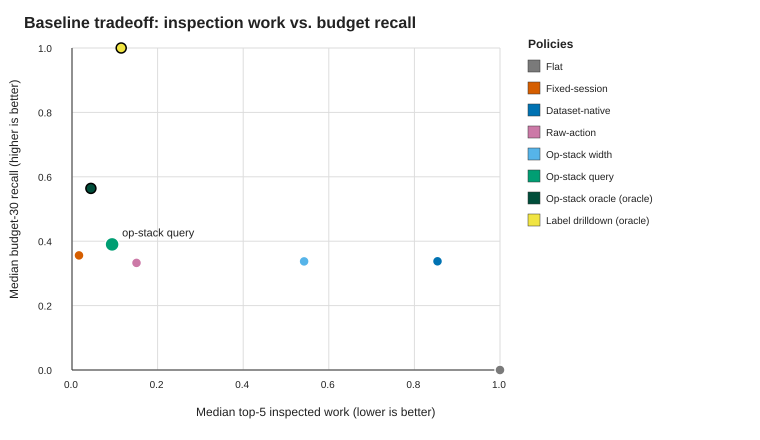
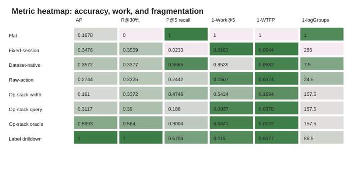
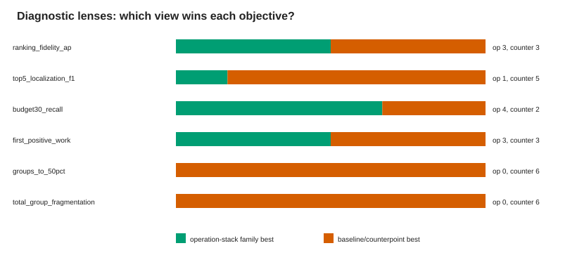
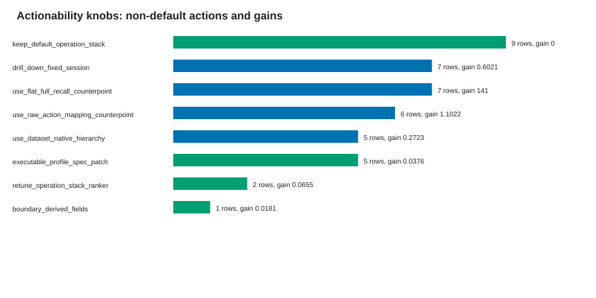
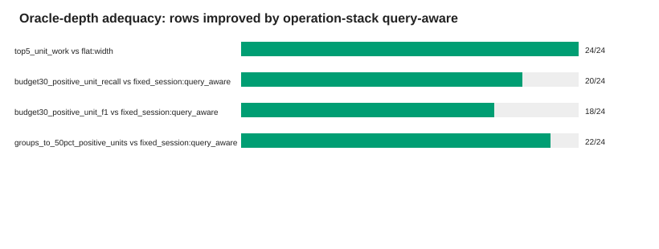

Status: pass; checks:
7/7.
E2 baseline superiority/tradeoff: work, recall, and oracle upper bounds.

E2 fidelity and counterpoints across AP, recall, work, WTFP, and fragmentation.

E3 multi-lens analysis: ranked stacks, hot groups, budget curves, drilldown, and fragmentation.

E3 actionable optimization knobs from view/ranker/stack/profile-spec/boundary changes.

E2/E3 depth-aware localization against task-specific oracle units.

| Check | Status | Evidence |
|---|---|---|
| multi_view_portfolio_not_flamegraph_only | pass | 5 paper views generated. |
| baseline_tradeoff_view_preserves_main_claim | pass | Operation-stack query-aware remains lower work than flat and at least fixed-session budget recall in the median summary. |
| diagnostic_lens_view_preserves_counterpoints | pass | Six diagnostic lenses are present and at least one lens is a non-operation-stack counterpoint. |
| actionability_view_has_nondefault_knobs | pass | Actionability rows include objective-level counterfactuals plus executable profile-spec and boundary-field knobs. |
| oracle_depth_view_preserves_depth_support | pass | Oracle-depth rows preserve 24/24 flat-work and >=20/24 fixed-session recall/group support. |
| source_policy_no_new_data_or_profiler_rerun | pass | R363 reads tracked clean upstream artifacts only. |
| two_abstractions_only | pass | Visualization portfolio is over operation/operation-stack outputs, not new profiler objects. |